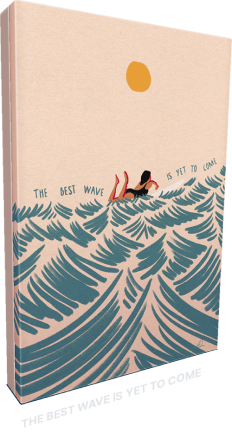
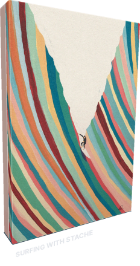
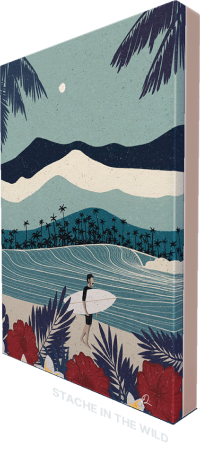

Fabian Lavater
Illustrator / Basel, Switzerland
파비안 라바터는 바젤에서 활동하고 있는 일러스트레이터입니다. 파비안은 자연에서 경험하는 삶의 순간들을 감각적인 컬러로 표현합니다. 해변의 풍경과 파도, 서핑 등 아티스트 삶의 일부가 되어버린 자연과의 관계를 독특한 컬러와 메시지에 녹여 표현합니다. 편안하면서도 시선을 사로잡는 그의 화풍을 바탕으로, 아티스트는 친환경 의류 브랜드 및 인테리어, 아웃도어 브랜드 등과 협업을 이어가고 있습니다.
수량
각 100개씩 민팅



메타버스 NFT 아이템
Kim Jam
Illustrator / Seoul, Korea
김잼은 서울에서 활동하고 있는 일러스트레이터입니다. 디자이너로 시작해 모션그래픽부터 사진까지, 다양한 매체로 작업해오던 김잼은 이제 일러스트레이션을 통해 그녀만의 스타일을 그려나갑니다. 강아지, 빵 등 자신이 좋아하는 요소들이 녹아 있는 아트워크들은 단순히 프로젝트만을 위해서가 아닌, 아티스트 스스로도 사랑해 마지않는 장면으로서 완성됩니다. 따뜻하고 말랑말랑한 느낌의 그림이 보는 사람의 기분과 공간의 무드 전부를 부드럽게 만들어 줍니다. 정형화되지 않은 김잼의 스타일은 평면적이면서도 고유의 생동감을 전하며, 아티스트가 표현하고자 하는 분위기와 정서로 주위를 차츰 물들게 합니다.